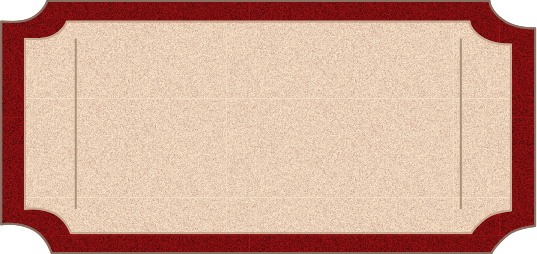

Sources
Cette section regroupe l’ensemble des documents et ressources utilisés
dans le cadre du projet Moviz, incluant les outils, médias, et API
exploités, ainsi que les inspirations et références méthodologiques.
1. Ressources Techniques et API
2. Médias et Design
-
Images et Vidéos :
-
Design des médias (logo, vecteurs, graphiques) créés par Alyssa Karahan et Sathusan Bojan.
-
Affiches des Films issues du site Allociné.fr :
Cliquez sur la liste déroulante pour afficher la liste des films et accéder à leur page AlloCiné.
-
Typographie et Icônes :
3. Documentation de Développement
-
Frameworks et Technologies :
-
HTML5 / CSS3 / JavaScript : Utilisés pour le développement
front-end.
-
Chart.js : Librairie JavaScript pour les graphiques interactifs.
-
D3.js : Librairie JavaScript pour la visualisation de données.
-
Environnement de Développement :
4. Inspirations et Méthodologie
-
Cours et supports universitaires : Ressources
pédagogiques utilisées dans le cadre de la formation.
-
Projets similaires : Analyse comparative d’autres
plateformes de data visualisation.